स्कन्ध 11 · अध्याय 28
श्लोक १
श्रीभगवानुवाच–
परस्वभावकर्माणि न प्रशंसेन्न गर्हयेत् ।
विश्वमेकात्मकं पश्यन् प्रकृत्या पुरुषेण च।। १ ।।
परस्वभावकर्माणि न प्रशंसेन्न गर्हयेत् ।
विश्वमेकात्मकं पश्यन् प्रकृत्या पुरुषेण च।। १ ।।
भागवततात्पर्यनिर्णय
श्लोक २
परस्वभावकर्माणि यः प्रशंसति निन्दति ।
स आशु भ्रंशते स्थानादसत्याभिनिवेशतः ।। २ ।।
स आशु भ्रंशते स्थानादसत्याभिनिवेशतः ।। २ ।।
भागवततात्पर्यनिर्णय
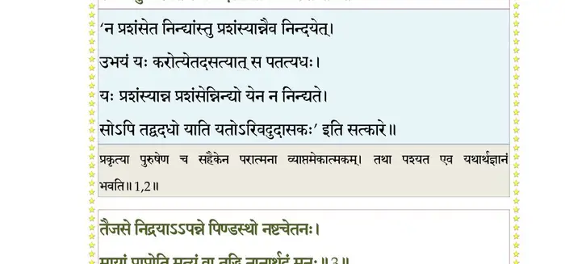
श्लोक ३
तैजसे निद्रयाऽऽपन्ने पिण्डस्थो नष्टचेतनः ।
मायां प्राप्नोति मृत्युं वा तद्धि नानार्थदं मनः ।। ३ ।।
मायां प्राप्नोति मृत्युं वा तद्धि नानार्थदं मनः ।। ३ ।।
भागवततात्पर्यनिर्णय
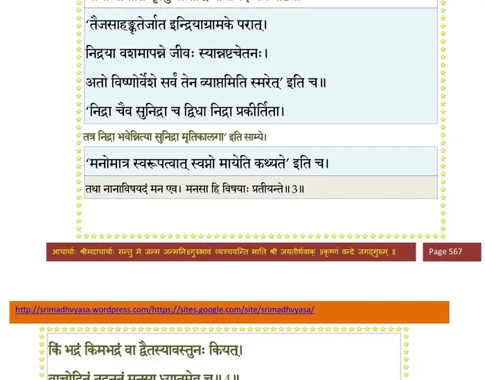
श्लोक ४
किं भद्रं किमभद्रं वा द्वैतस्यावस्तुनः कियत् ।
वाचोदितं तदनृतं मनसा ध्यातमेव च ।। ४ ।।
वाचोदितं तदनृतं मनसा ध्यातमेव च ।। ४ ।।
भागवततात्पर्यनिर्णय
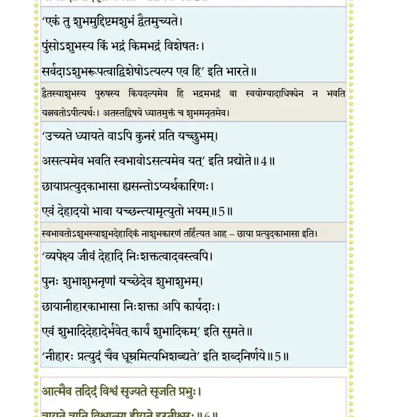
श्लोक ५
छायाप्रत्युदकाभासा ह्यसन्तोऽप्यर्थकारिणः ।
एवं देहादयो भावा यच्छन्त्यामृत्युतो भयम् ।। ५ ।।
एवं देहादयो भावा यच्छन्त्यामृत्युतो भयम् ।। ५ ।।
श्लोक ६
आत्मैव तदिदं विश्वं सृज्यते सृजति प्रभुः ।
त्रायते त्राति विश्वात्मा ह्रियते हरतीश्वरः ।। ६ ।।
त्रायते त्राति विश्वात्मा ह्रियते हरतीश्वरः ।। ६ ।।
भागवततात्पर्यनिर्णय
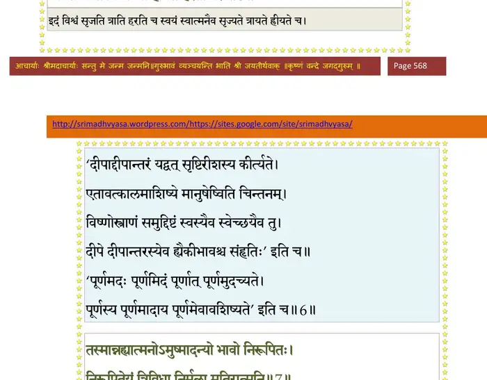
श्लोक ७
तस्मान्न ह्यात्मनोऽमुष्मादन्यो भावो निरूपितः ।
अनिरूपितेयं त्रिविधा निर्मूला मतिरात्मनि ।। ७ ।।
अनिरूपितेयं त्रिविधा निर्मूला मतिरात्मनि ।। ७ ।।
भागवततात्पर्यनिर्णय
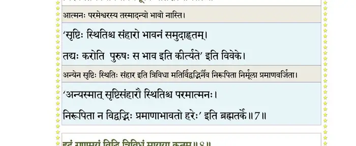
श्लोक ८
इदं गुणमयं विद्धि त्रिविधं मायया कृतम्।। ८ ।।
भागवततात्पर्यनिर्णय
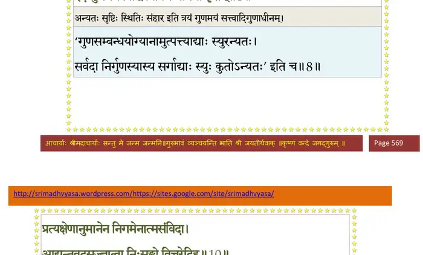
श्लोक ९
एतद् विद्वान् मदुदितं ज्ञानविज्ञाननैपुणः ।
न निन्दति न च स्तौति लोके चरति सूर्यवत् ।। ९ ।।
न निन्दति न च स्तौति लोके चरति सूर्यवत् ।। ९ ।।
श्लोक १०
प्रत्यक्षेणानुमानेन निगमेनात्मसंविदा ।
आद्यन्तवदसज्ज्ञात्वा निःसङ्गो विचरेदिह ।। १० ।।
आद्यन्तवदसज्ज्ञात्वा निःसङ्गो विचरेदिह ।। १० ।।
भागवततात्पर्यनिर्णय
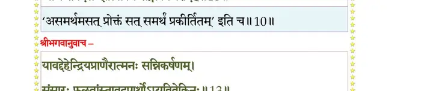
श्लोक ११
उद्धव उवाच–
नैवात्मनो न देहस्य संसृतिर्द्रष्टृदृश्ययोः ।
अनात्मस्वदृशोरीश कस्येयमुपलभ्यते।। ११ ।।
नैवात्मनो न देहस्य संसृतिर्द्रष्टृदृश्ययोः ।
अनात्मस्वदृशोरीश कस्येयमुपलभ्यते।। ११ ।।
श्लोक १२
आत्माऽव्ययोऽगुणः शुद्धः स्वयंज्योतिरनावृतः ।
अग्निवद् दारुवदपि देहः कस्येति संसृतिः ।। १२ ।।
अग्निवद् दारुवदपि देहः कस्येति संसृतिः ।। १२ ।।
श्लोक १३
श्रीभगवानुवाच–
यावद् देहेन्द्रियप्राणैरात्मनः सन्निकर्षणम् ।
संसारः फलवांस्तावदपार्थोऽप्यविवेकिनः ।। १३ ।।
यावद् देहेन्द्रियप्राणैरात्मनः सन्निकर्षणम् ।
संसारः फलवांस्तावदपार्थोऽप्यविवेकिनः ।। १३ ।।
भागवततात्पर्यनिर्णय
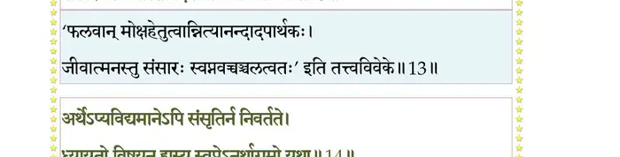
श्लोक १४
अर्थेऽप्यविद्यमानेऽपि संसृतिर्न निवर्तते ।
ध्यायतो विषयानस्य स्वप्नेऽनर्थागमो यथा।। १४ ।।
ध्यायतो विषयानस्य स्वप्नेऽनर्थागमो यथा।। १४ ।।
भागवततात्पर्यनिर्णय
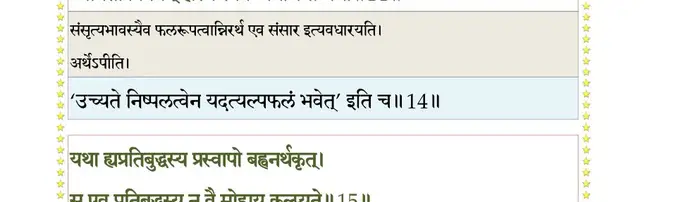
श्लोक १५
यथा ह्यप्रतिबुद्धस्य प्रस्वापो बह्वनर्थकृत् ।
स एव प्रतिबुद्धस्य न वै मोहाय कल्प(ल्प्य)ते।। १५ ।।
स एव प्रतिबुद्धस्य न वै मोहाय कल्प(ल्प्य)ते।। १५ ।।
भागवततात्पर्यनिर्णय
श्लोक १६
शोकहर्षभयक्रोधलोभमोहस्पृहादयः ।
अहङ्कारस्य दृश्यन्ते जन्ममृत्युश्च नात्मनः ।। १६ ।।
अहङ्कारस्य दृश्यन्ते जन्ममृत्युश्च नात्मनः ।। १६ ।।
भागवततात्पर्यनिर्णय
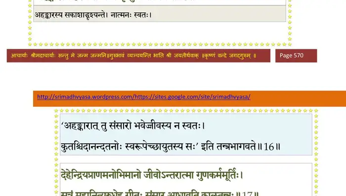
श्लोक १७
देहेन्द्रियप्राणमनोभिमानो जीवोऽन्तरात्मा गुणकर्ममूर्तिः ।
सूत्रं महानित्युरुधेह गीतः संसार आधावति कालतन्त्रः।। १७ ।।
सूत्रं महानित्युरुधेह गीतः संसार आधावति कालतन्त्रः।। १७ ।।
भागवततात्पर्यनिर्णय
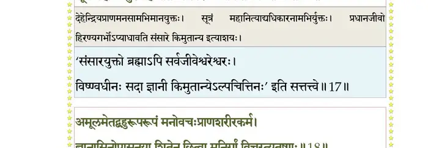
श्लोक १८
अमूलमेतद् बहुरूपरूपं मनोवचःप्राणशरीरकर्म ।
ज्ञानासिनोपासनया शितेन च्छित्त्वा मुनिर्गां विचरत्यतृष्णः।।१८।।
ज्ञानासिनोपासनया शितेन च्छित्त्वा मुनिर्गां विचरत्यतृष्णः।।१८।।
भागवततात्पर्यनिर्णय
श्लोक १९
ज्ञानं विवेको निगमस्तपश्च प्रत्यक्षमैतिह्यमथानुमानम् ।
आद्यन्तयोरस्य यदेव केवलं कालश्च हेतुश्च तदेव मध्ये।। १९ ।।
आद्यन्तयोरस्य यदेव केवलं कालश्च हेतुश्च तदेव मध्ये।। १९ ।।
भागवततात्पर्यनिर्णय
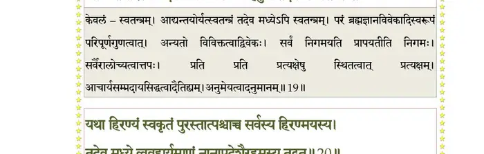
श्लोक २०
यथा हिरण्यं स्वकृतं पुरस्तात् पश्चाच्च सर्वस्य हिरण्मयस्य ।
तदेव मध्ये व्यवहार्यमाणं नानापदेशैरहमस्य तद्वत् ।। २० ।।
तदेव मध्ये व्यवहार्यमाणं नानापदेशैरहमस्य तद्वत् ।। २० ।।
भागवततात्पर्यनिर्णय
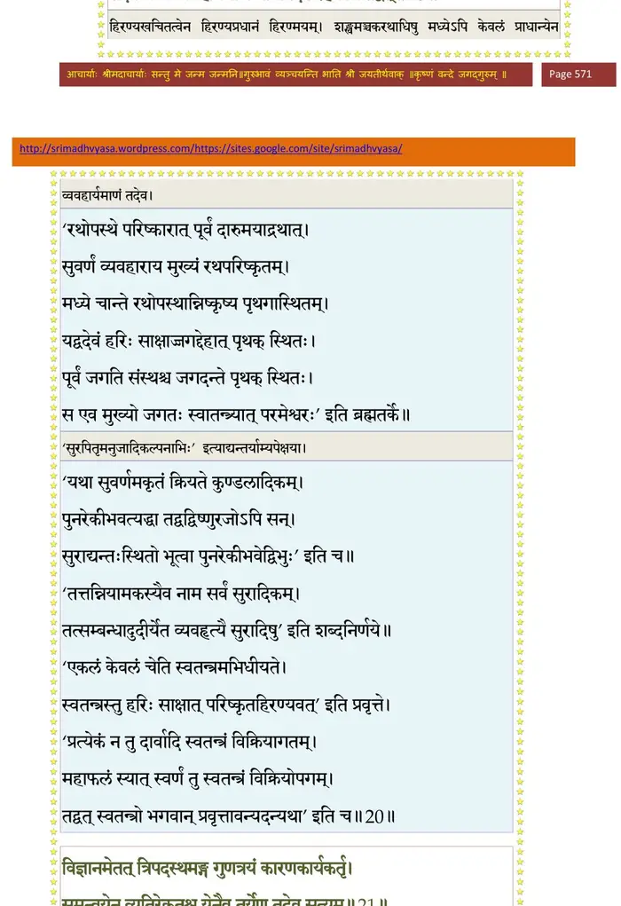
श्लोक २१
विज्ञानमेतत् त्रिपदस्थमङ्ग गुणत्रयं कारणकार्यकर्तृ ।
समन्वयेन व्यतिरेकतश्च येनैव तुर्येण तदेव सत्यम् ।। २१ ।।
समन्वयेन व्यतिरेकतश्च येनैव तुर्येण तदेव सत्यम् ।। २१ ।।
भागवततात्पर्यनिर्णय
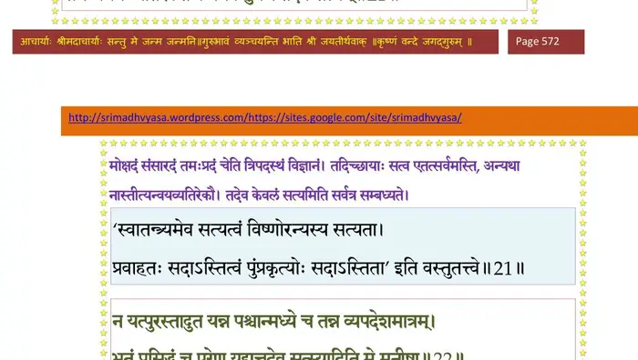
श्लोक २२
न यत् पुरस्तादुत यन्न पश्चान् मध्ये च तन्न व्यपदेशमात्रम् ।
भूतं प्रसिद्धं च परेण यद्यत् तदेव सत् स्यादिति मे मनीषा।।२२।।
भूतं प्रसिद्धं च परेण यद्यत् तदेव सत् स्यादिति मे मनीषा।।२२।।
भागवततात्पर्यनिर्णय
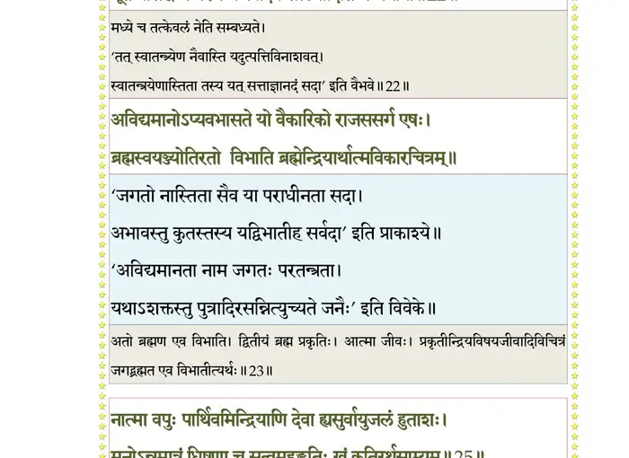
श्लोक २३
अविद्यमानोऽप्यवभासते यो वैकारिको राजससर्ग एषः ।
ब्रह्म स्वयंज्योतिरतो विभाति ब्रह्मेन्द्रियार्थात्मविकारचित्रम्।। २३ ।।
ब्रह्म स्वयंज्योतिरतो विभाति ब्रह्मेन्द्रियार्थात्मविकारचित्रम्।। २३ ।।
श्लोक २४
एवं स्फुटं ब्रह्म विविच्य हेतुभिः परापवादेन विवेकबुध्या ।
छित्वाऽऽत्मसन्देहमुपारमेत स्वानन्दतुष्टोऽखिलकामुकेभ्यः ।। २४ ।।
छित्वाऽऽत्मसन्देहमुपारमेत स्वानन्दतुष्टोऽखिलकामुकेभ्यः ।। २४ ।।
श्लोक २५
नात्मा वपुः पार्थिवमिन्द्रियाणि देवा ह्यसुर्वायुजलं हुताशः ।
मनोऽन्नमात्रं धिषणा च सत्वमहङ्कृतिः स्वं कृतिरर्थसाम्यम् ।। २५ ।।
मनोऽन्नमात्रं धिषणा च सत्वमहङ्कृतिः स्वं कृतिरर्थसाम्यम् ।। २५ ।।
भागवततात्पर्यनिर्णय
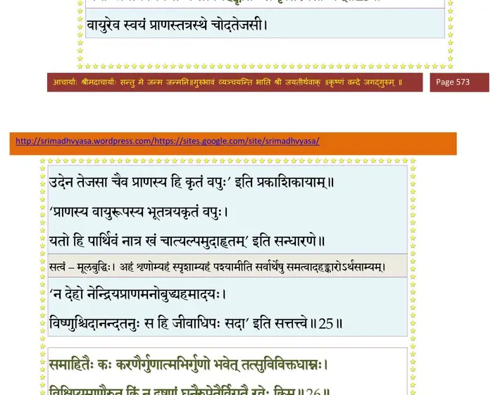
श्लोक २६
समाहितैः कः करणैर्गुणात्मभिर्गुणो भवेत् तत्सुविविक्तधाम्नः ।
विक्षिप्यमाणैरुत किं नु दूषणं घनैरुपेतैर्विगतै रवेः किम्।। २६ ।।
विक्षिप्यमाणैरुत किं नु दूषणं घनैरुपेतैर्विगतै रवेः किम्।। २६ ।।
भागवततात्पर्यनिर्णय
श्लोक २७
यथा नभो वाय्वनलाम्बुभूगुणैर्गतागतैर्वा त्रिगुणैर्न सज्जते ।
तथाऽक्षरं सत्वरजस्तमोमलैरसङ्गतं संसृतिहेतुभिः परम्।। २७ ।।
तथाऽक्षरं सत्वरजस्तमोमलैरसङ्गतं संसृतिहेतुभिः परम्।। २७ ।।
श्लोक २८
तथापि सङ्गः परिवर्जनीयो गुणेषु मायारचितेषु तावत् ।
मद्भक्तियोगेन दृढेन यावत् रजो निरस्येत तमःकषायम्।। २८ ।।
मद्भक्तियोगेन दृढेन यावत् रजो निरस्येत तमःकषायम्।। २८ ।।
भागवततात्पर्यनिर्णय
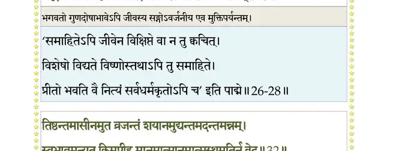
श्लोक २९
यथाऽमयोऽसाधुचिकित्सितो नृणां पुनः पुनः सन्तुदति प्ररोहन् ।
एवं मनोऽपक्वकषायकर्म कुयोगिनं विद्ध्यति सर्वसङ्गम् ।। २९ ।।
एवं मनोऽपक्वकषायकर्म कुयोगिनं विद्ध्यति सर्वसङ्गम् ।। २९ ।।
श्लोक ३०
कुयोगिनो ये विहता ह्यन्तरायैः मनुष्यभूतैस्त्रिदशोपसृष्टैः ।
ते प्राक्तनाभ्यासबलेन भूयो युञ्जन्ति योगं न तु कर्मतन्त्रम्।।३०।।
ते प्राक्तनाभ्यासबलेन भूयो युञ्जन्ति योगं न तु कर्मतन्त्रम्।।३०।।
श्लोक ३२
करोति कर्म क्रियते च जन्तुः केनाप्यसौ चोदित आनिपातात् ।
न तत्र विद्वान् प्रकृ(तौ)तिस्थितोऽपि निवृत्ततृष्णः स्वसुखानुभूत्या ।।
तिष्ठन्तमासीनमुत व्रजन्तं शयानमुद्यन्तमदन्तमन्नम् ।
स्वभावमन्यत् किमपीहमानमात्मानमात्मस्थमतिर्न वेद ।। ३२ ।।
न तत्र विद्वान् प्रकृ(तौ)तिस्थितोऽपि निवृत्ततृष्णः स्वसुखानुभूत्या ।।
तिष्ठन्तमासीनमुत व्रजन्तं शयानमुद्यन्तमदन्तमन्नम् ।
स्वभावमन्यत् किमपीहमानमात्मानमात्मस्थमतिर्न वेद ।। ३२ ।।
भागवततात्पर्यनिर्णय
श्लोक ३३
यदि स्म पश्यत्यसदिन्द्रियार्थं नानानुमानेन विरुद्धमन्यत् ।
न मन्यते वस्तुतया मनीषी स्वप्नं यथोत्थाय तिरोदधानम् ।। ३३ ।।
न मन्यते वस्तुतया मनीषी स्वप्नं यथोत्थाय तिरोदधानम् ।। ३३ ।।
भागवततात्पर्यनिर्णय
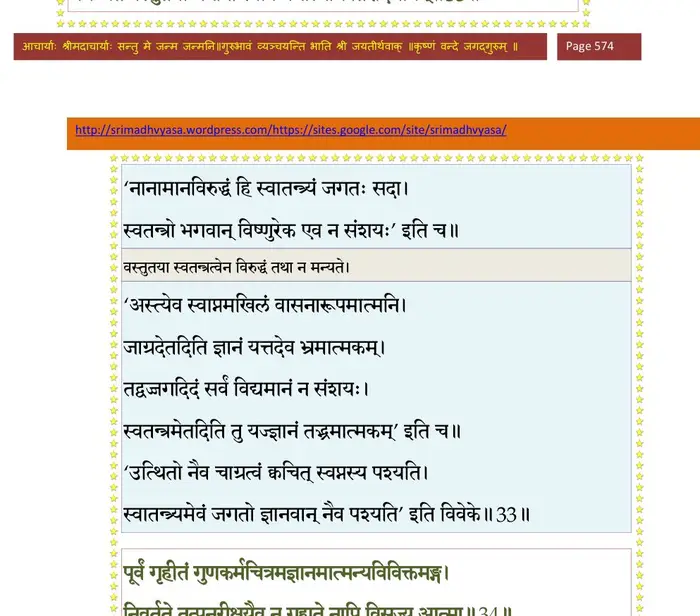
श्लोक ३४
पूर्वं गृहीतं गुणकर्मचित्रमज्ञानमात्मन्यविविक्तमङ्ग ।
निवर्तते तत् पुनरीक्षयैव न गृह्यते नापि विसृज्य आत्मा ।। ३४ ।।
निवर्तते तत् पुनरीक्षयैव न गृह्यते नापि विसृज्य आत्मा ।। ३४ ।।
भागवततात्पर्यनिर्णय
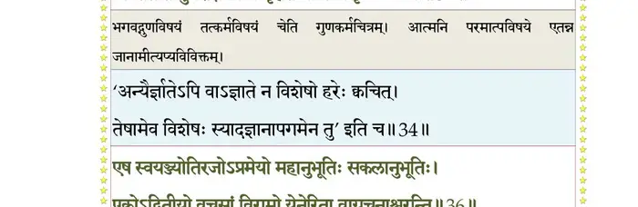
श्लोक ३५
यथा हि भानोरुदयो नृचक्षुषां तमो निहन्यान्न च (तु)संविधत्ते ।
एवं समीक्षा निपुणा सती मे हन्यात् तमिस्रं पुरुषस्य बुद्धेः ।।३५।।
एवं समीक्षा निपुणा सती मे हन्यात् तमिस्रं पुरुषस्य बुद्धेः ।।३५।।
श्लोक ३६
एष स्वयंज्योतिरजोऽप्रमेयो महानुभूतिः सकलानुभूतिः ।
एकोऽद्वितीयो वचसां विरामो येनेरिता वाग्रचनाश्चरन्ति ।। ३६ ।।
एकोऽद्वितीयो वचसां विरामो येनेरिता वाग्रचनाश्चरन्ति ।। ३६ ।।
भागवततात्पर्यनिर्णय
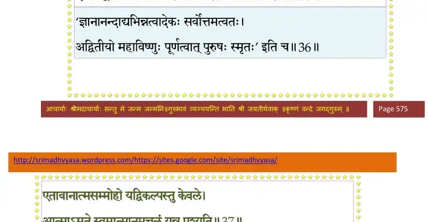
श्लोक ३७
एतावानात्मसंमोहो यद् विकल्पस्तु केवले ।
आत्माऽमृते स्वमात्मानमचलं यन्न पश्यति ।। ३७ ।।
आत्माऽमृते स्वमात्मानमचलं यन्न पश्यति ।। ३७ ।।
भागवततात्पर्यनिर्णय
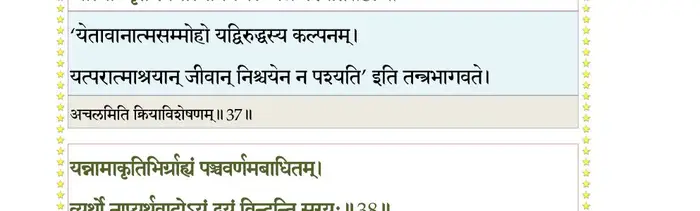
श्लोक ३८
यन्नामाकृतिभिर्ग्राह्यं पञ्चवर्णमबाधितम् ।
व्यर्थो नाप्यर्थवादोऽयं द्वयं विन्दन्ति सूरयः ।। ३८ ।।
व्यर्थो नाप्यर्थवादोऽयं द्वयं विन्दन्ति सूरयः ।। ३८ ।।
भागवततात्पर्यनिर्णय
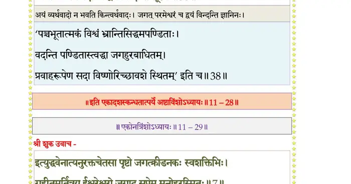
श्लोक ३९
योगिनो पक्वयोगस्य युञ्जतः काल उत्थितैः ।
उपसर्गैर्विहन्येत तत्रायं विहितो विधिः ।। ३९ ।।
उपसर्गैर्विहन्येत तत्रायं विहितो विधिः ।। ३९ ।।
श्लोक ४०
योगधारणया कांश्चिदासनैर्धारणान्वितैः ।
तपोमन्त्रौषधैः कांश्चिदुपसर्गान् विनिर्दहेत् ।। ४० ।।
तपोमन्त्रौषधैः कांश्चिदुपसर्गान् विनिर्दहेत् ।। ४० ।।
श्लोक ४१
कांश्चिन्ममानुध्यानेन नामसङ्कीर्तनादिभिः ।
योगेश्वरानुवृत्त्या वा हन्यादशुभदान् शुभैः ।। ४१ ।।
योगेश्वरानुवृत्त्या वा हन्यादशुभदान् शुभैः ।। ४१ ।।
श्लोक ४२
केचिद् देहमिमं धार्यं सुकल्पं (सुकल्यं) वयसि स्थितम् ।
विधाय विविधोपायैरथ युञ्जन्ति सिद्धये ।। ४२ ।।
विधाय विविधोपायैरथ युञ्जन्ति सिद्धये ।। ४२ ।।
श्लोक ४३
इह वर्षशताशीत्या तदायासो ह्यपार्थकः ।
अन्तवत्त्वाच्छरीरस्य फलस्येव वनस्पतेः ।। ४३ ।।
अन्तवत्त्वाच्छरीरस्य फलस्येव वनस्पतेः ।। ४३ ।।
श्लोक ४४
योगं निषेवतो नित्यं कायश्चेत् कल्प(ल्य)तामियात् ।
तच्छ्रद्दध्यान्न मतिमान् योगमुत्सृज्य मत्परः ।। ४४ ।।
तच्छ्रद्दध्यान्न मतिमान् योगमुत्सृज्य मत्परः ।। ४४ ।।
श्लोक ४५
योगचर्यामिमां योगी विचरन् मदपाश्रयः ।
नान्तरायैर्विहन्येत निःस्पृहः स्वसुखानुभूः ।। ४५ ।।
नान्तरायैर्विहन्येत निःस्पृहः स्वसुखानुभूः ।। ४५ ।।
।। इति श्रीमद्भागवते एकादशस्कन्धे अष्टविंशोऽध्यायः ।।